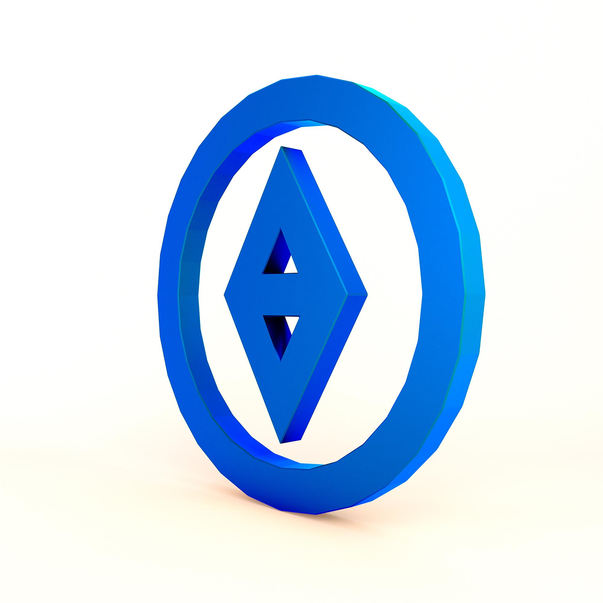

2nd Avenue
610 North 2nd Avenue, Wausau, WI 54401
Connexus combines its own branch network with CO-OP shared branching and MoneyPass ATM access, giving members more ways to reach cash, service, and support while traveling or living outside a core market.

The branch list below consolidates the locations surfaced in public Connexus location references and gives visitors a quick local directory without leaving the site. Each branch supports the broader Connexus identity of pairing digital service with real-world access, especially for members who want in-person conversations, cash services, or appointment-based support. Because hours and in-branch service details can change, the official Connexus locator remains the best place to confirm current availability before visiting.
610 North 2nd Avenue, Wausau, WI 54401
151025 County Road NN, Wausau, WI 54401
114 S Avon Ave, Phillips, WI 54555
2555 Shopko Dr, Madison, WI 53704
5959 E State St, Rockford, IL 61108
7144 N Perryville Rd, Machesney Park, IL 61115
4617 Liuna Way, DeForest, WI 53532
3316 Business Park Dr, Stevens Point, WI 54482
827 Phillips Blvd, Sauk City, WI 53583
1930 8th St S, Wisconsin Rapids, WI 54494
1980 National Blvd, Galesburg, IL 61401
701 Miner Ave W, Ladysmith, WI 54848
1502 Hwy Blvd, Chetek, WI 54728
5825 Xerxes Ave N, Brooklyn Center, MN 55430
Connexus also participates in shared branching and fee-conscious ATM networks so members can do more than simply locate a single home branch. CO-OP shared branching expands in-person reach, while MoneyPass and other supported ATM access options help members withdraw cash and manage everyday needs while on the road. For many members, this network effect is one of the strongest reasons to choose a digital-first credit union: the account relationship can remain centralized even when life, work, or travel takes them far from a permanent home address.
Review branch-specific directions, hours, and service details on the official Connexus site.
Use CO-OP network access for more in-person support options.
Call ahead or book support if you need specialized assistance.